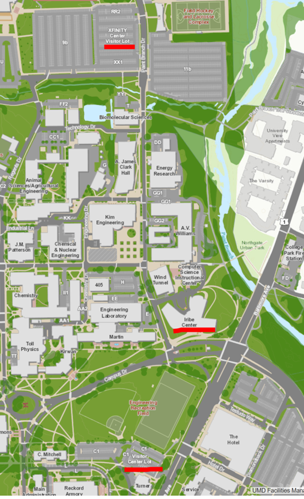
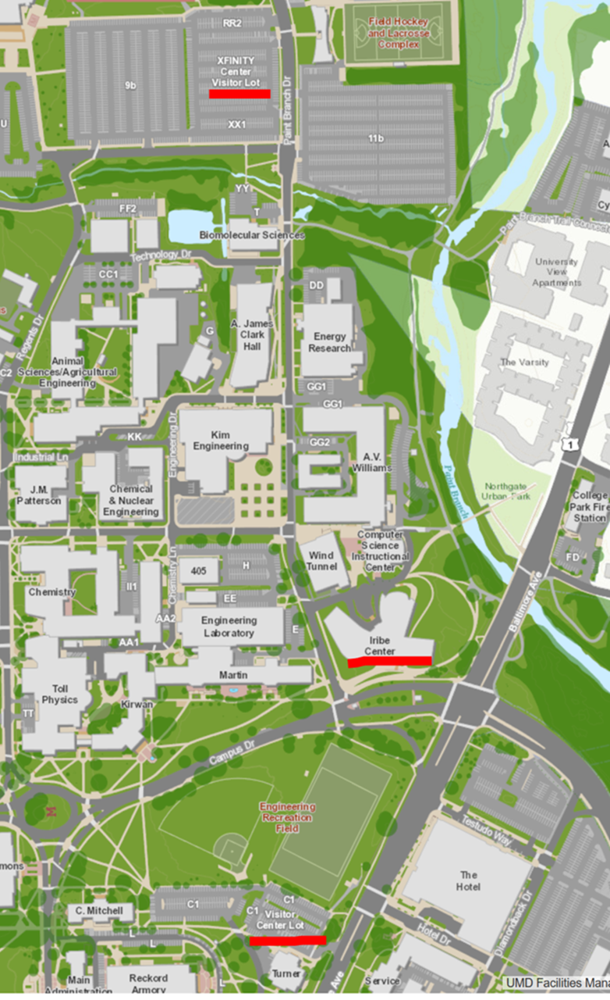

SCAN: Socio-Cultural Attitudinal Networks
SCAN Program Review Agenda
| 08:30-08:45 | Registration | ||||||
| 08:45-09:30 | Overview of SCAN Accomplishments (Prof. V.S. Subrahmanian, Dartmouth) | ||||||
| 09:30-10:00 | Dominance: Statistical Analysis of Audio & Linguistic Indicators of Dominance (Prof. Norah Dunbar, UCSB)
| ||||||
| 10:00-10:30 | Break with student posters
| ||||||
| 10:30-11:00 | Dominance: Perceived dominance prediction (Chongyang Bai, Dartmouth) | ||||||
| 11:00-11:30 | Deception: Statistical Analysis of Human Behaviors Linked to Deception Detection (Prof. Judee Burgoon, UA)
| ||||||
| 11:30-12:00 | Deception: Deception Detection with Attention Models (Prof. Dimitris Metaxas, Rutgers) | ||||||
| 12:00-13:00 | Working lunch with posters and demos
| ||||||
| 13:00-13:30 | Deception: Predicting Deception using Inter-Personal Behavior (Prof. Jure Leskovec, Stanford) | ||||||
| 13:30-14:00 | Other Contributions and Next Step (Prof. V.S. Subrahmanian, Dartmouth) | ||||||
| 14:00-14:30 | Internal discussion by ARO Team | ||||||
| 14:30-15:00 | Feedback to MURI team from ARO |
Location and parking
Meeting location: Room 3137 Iribe Bldg.
Address is: 8125 Paint Branch Drive, College Park, MD 20742
Visitor parking is available in lots highlighted on the map
Instructions for pay station at the Xfinity Visitor Lot:
Parking Code: 86820419

Address is: 8125 Paint Branch Drive, College Park, MD 20742
Visitor parking is available in lots highlighted on the map
Instructions for pay station at the Xfinity Visitor Lot:
Parking Code: 86820419
- Press OK to start
- Enter space number
- Select “more options” on the first time screen
- Select amount of time using the “with code” selections
- Enter code
- Make sure that you take receipt
